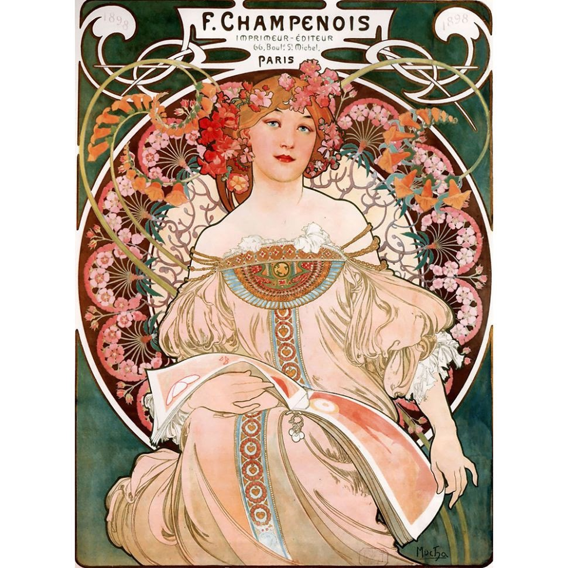
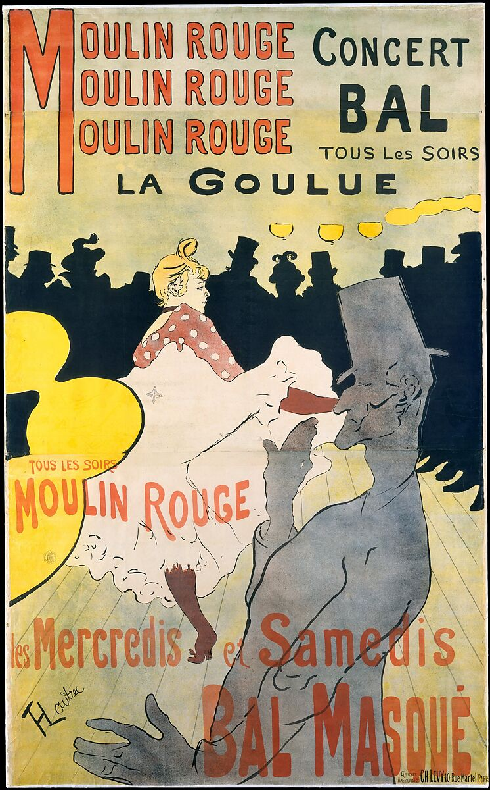
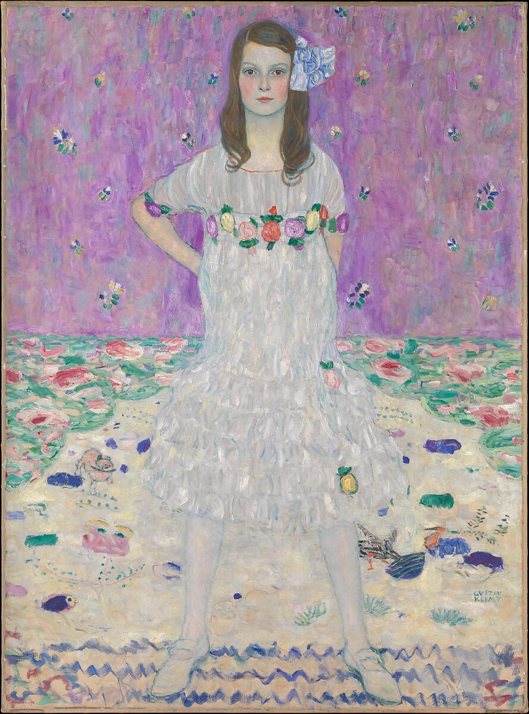

Art Nouveau
Art Nouveau (“New Art”) flourished in western Europe and the United States from the 1880s until the First World War. It was a deliberate attempt to abandon the historical styles of the 19th century. Creators of Art Nouveau sought to revive good workmanship, raise the status of craft, and produce a genuinely modern design that reflected the utility of the items they were creating. One distinctive characteristic of the style is the use of organic, asymmetrical linework instead of solid, uniform shapes applied across architecture, interiors, jewelry, as well as posters and illustration.
From the 1880s until the First World War, western Europe and the United States witnessed the development of Art Nouveau (“New Art”). Taking inspiration from the unruly aspects of the natural world, Art Nouveau influenced art and architecture especially in the applied arts, graphic work, and illustration.
Additionally, the new style was an outgrowth of two nineteenth-century English developments for which design reform (a reaction to prevailing art education, industrialized mass production, and the debasement of historic styles) was a leitmotif—the Arts and Crafts movement and the Aesthetic movement. The former emphasized a return to handcraftsmanship and traditional techniques. The latter promoted a similar credo of “art for art’s sake” that provided the foundation for non-narrative paintings, for instance, Whistler‘s Nocturnes. It further drew upon elements of Japanese art (“japonisme“), which flooded Western markets, mainly in the form of prints, after trading rights were established with Japan in the 1860s. Indeed, the gamut of late nineteenth-century artistic trends prior to World War I, including those in painting and the early designs of the Wiener Werkstätte, may be defined loosely under the rubric of Art Nouveau.
